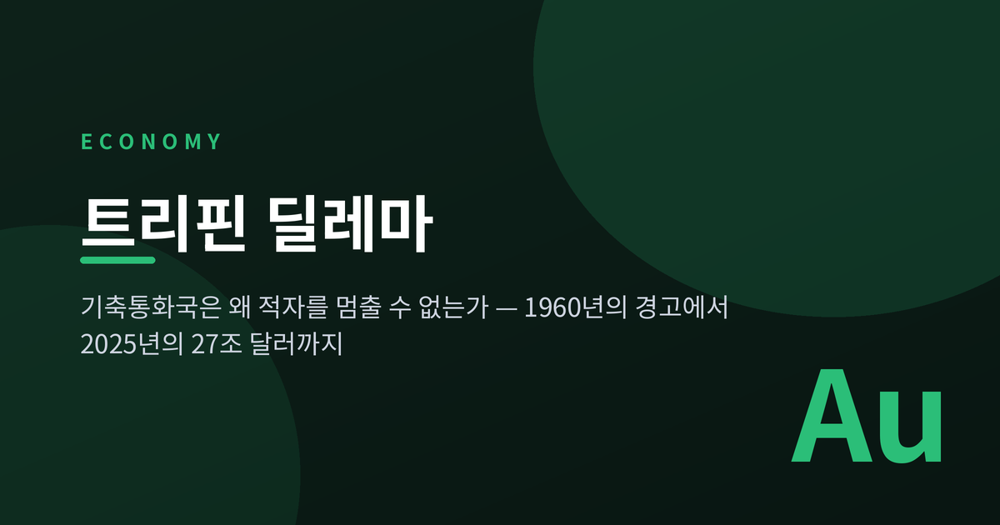
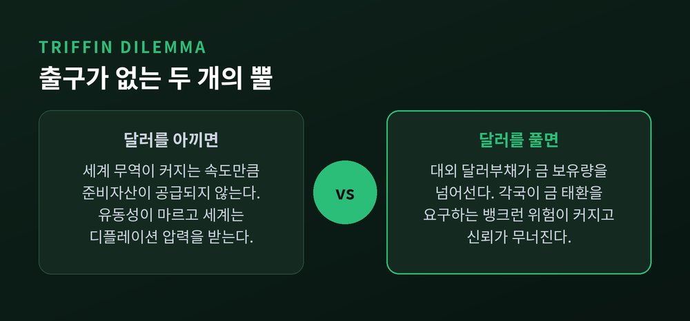
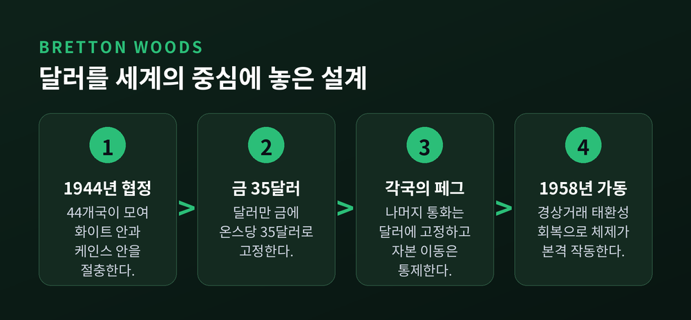
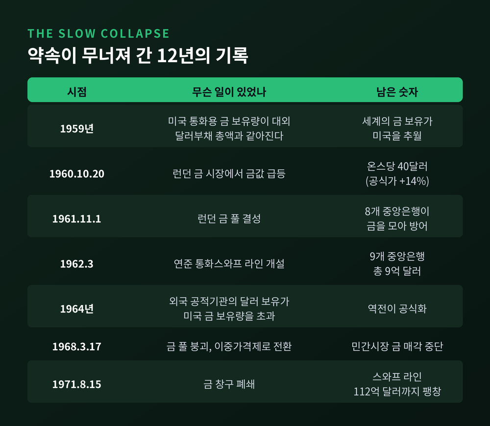
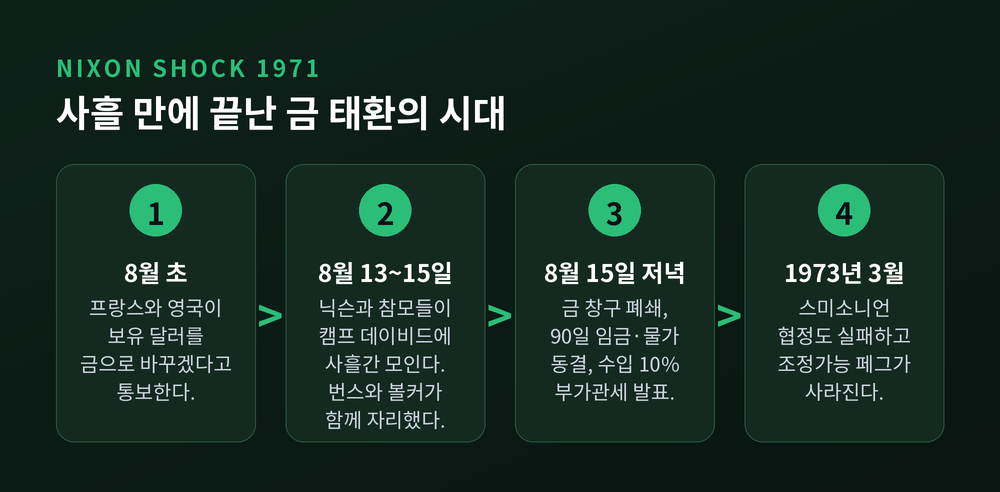
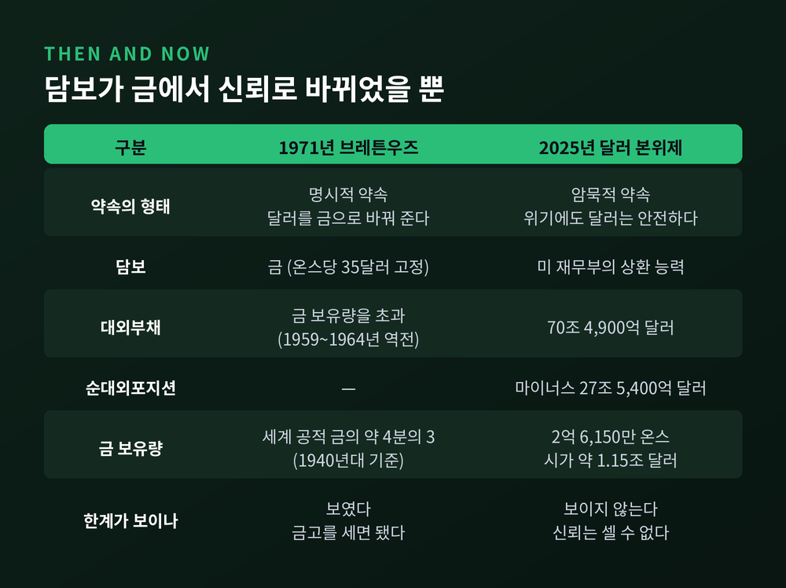
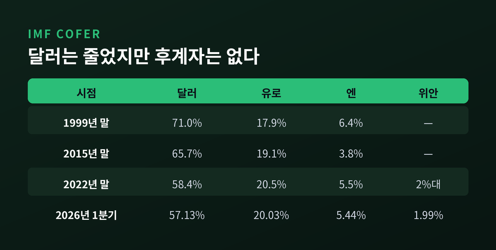

이번 글에서는 트리핀 딜레마를 정리해 보겠습니다. 1960년에 제기된 이 문제는 브레튼우즈 체제를 무너뜨렸고, 금 태환이 사라진 지 반세기가 지난 지금도 형태를 바꿔 남아 있습니다. 기축통화국이 왜 적자를 계속 낼 수밖에 없는지, 그 적자가 왜 스스로의 신뢰를 갉아먹는지를 순서대로 따라가 보겠습니다.

벨기에 태생의 경제학자 로버트 트리핀은 1959년부터 한 가지를 지적했습니다. 1960년에는 『황금과 달러의 위기(Gold and the Dollar Crisis)』를 펴냈고, 그해 12월 미 의회 합동경제위원회에 나가 같은 이야기를 했습니다.
논리는 단순합니다.
브레튼우즈 체제는 달러를 세계의 결제수단으로 삼았습니다. 세계 무역이 커지면 그만큼 달러가 더 필요합니다. 금 생산량으로는 그 수요를 감당할 수 없습니다. 1940년대에 정한 온스당 35달러라는 값이 금을 지나치게 싸게 매겨 두었기 때문입니다.
그러면 부족분은 어디서 나올까요. 미국의 국제수지 적자에서 나옵니다. 미국이 밖으로 달러를 흘려보내야 세계가 준비자산을 얻습니다.
문제는 그다음입니다. 대외 달러 부채가 쌓일수록, 각국 중앙은행이 그 달러를 금으로 바꿔 달라고 몰려올 가능성이 커집니다. 은행이 예금자에게 몰리는 것과 같은 구조입니다. 미국이 이를 막으려 긴축하면, 이번엔 세계가 디플레이션에 빠집니다.
"달러를 충분히 공급하면 신뢰가 무너지고, 신뢰를 지키면 유동성이 마른다."
트리핀은 이 모순에 출구가 없다고 봤습니다. 그가 내놓은 해법은 케인스가 1943년에 구상했던 '방코르'처럼, 어느 나라의 통화도 아닌 국제 준비자산을 새로 만드는 것이었습니다.
체제의 뼈대부터 짚겠습니다. 1944년 미국 뉴햄프셔주 브레튼우즈에 44개국이 모였습니다. 미국의 화이트 안과 영국의 케인스 안이 타협해 만든 결과가 이렇습니다. 각국 통화는 달러에 고정하고, 달러만 금에 온스당 35달러로 고정합니다. 자본 이동은 통제합니다.
출발은 안전해 보였습니다. 당시 미국이 세계 공적 금 보유고의 약 4분의 3을 갖고 있었기 때문입니다. 체제가 실제로 돌아가기 시작한 것은 주요국이 경상거래 태환성을 회복한 1958년부터입니다.
그런데 이 설계에는 미국만 누리는 예외가 하나 있었습니다. 다른 나라는 적자가 나면 긴축해야 했지만, 중심 통화국인 미국은 국제수지를 조정할 의무가 없었습니다. n개 통화 체제에서 n-1번째 통화였던 셈입니다. 유럽은 이 비대칭을 불쾌하게 여겼습니다.

트리핀의 경고가 숫자로 확인되기까지는 오래 걸리지 않았습니다.
마이클 보르도가 연준의 『Banking and Monetary Statistics 1941–1970』을 근거로 정리한 바에 따르면, 1959년에 미국의 통화용 금 보유량이 대외 달러 부채 총액과 같아졌습니다. 같은 해 나머지 세계가 가진 통화용 금이 미국을 앞질렀습니다. 그리고 1964년에는 외국 통화당국이 보유한 공적 달러 부채가 미국의 금 보유량을 넘어섰습니다.
두 연도가 다른 이유는 기준이 다르기 때문입니다. 1959년은 민간까지 포함한 전체 대외 달러 부채, 1964년은 외국 정부·중앙은행이 들고 있던 몫만 센 것입니다. 어느 기준을 쓰든 결론은 같습니다. 약속을 전부 지킬 금은 이미 없었습니다.

1960년 10월 20일, 런던 금 시장에서 금값이 온스당 40달러까지 치솟았습니다. 공식 가격보다 14% 높은 값입니다. 이때부터 미국과 유럽은 체제를 떠받치려고 온갖 장치를 동원했습니다.
효과는 있었습니다. 다만 오래가지 않았습니다. 1967년 11월 파운드가 평가절하되자 금 투기가 되살아났고, 프랑스가 이탈하면서 1968년 3월 17일 금 풀이 무너졌습니다. 이후 중앙은행 거래용과 민간시장용 금값을 분리하는 이중가격제로 넘어갑니다.
가장 정직한 지표는 스와프 라인입니다. 1962년 9억 달러였던 규모는 1971년 8월 금 창구가 닫힐 때 112억 달러가 되어 있었습니다. 9년 만에 12배가 넘게 불어난 것입니다. 보르도의 표현을 빌리면, 이 성장 자체가 "일시적 처방이 아니라 구조적 문제"라는 신호였습니다.
방아쇠를 당긴 것은 유럽이었습니다. 1971년 8월 초, 프랑스와 영국이 보유 달러를 금으로 바꾸겠다는 뜻을 밝혔습니다.
8월 13일부터 15일까지, 닉슨 대통령과 참모 열다섯 명이 캠프 데이비드에 모였습니다. 연준 의장 아서 번스, 재무장관 존 코널리, 국제통화담당 재무차관 폴 볼커가 그 자리에 있었습니다.
8월 15일 저녁 TV 연설에서 세 가지가 발표됩니다.
첫째, 금 창구 폐쇄. 외국 정부는 더 이상 달러를 금으로 바꿀 수 없게 됐습니다. 국제통화체제가 사실상 불환 체제로 넘어간 순간입니다.
둘째, 90일간 임금·물가 동결. 전시가 아닌 시기에 미국 정부가 임금과 물가를 통제한 첫 사례였습니다.
셋째, 수입품 10% 부가관세.
그해 12월 스미소니언 협정으로 고정환율을 되살리려 했지만 실패했습니다. 1973년 3월, 조정가능 페그는 완전히 사라졌습니다.

여기서 한 가지는 분명히 해 두겠습니다. 트리핀 딜레마는 확립된 정설이 아니라 지금도 논쟁 중인 가설입니다.
첫 번째 반론은 1966년에 나왔습니다. 데프레·킨들버거·샐런트는 「달러와 세계 유동성: 소수의견」에서 미국의 적자가 문제가 아니라고 주장했습니다. 나머지 세계가 달러의 유동성 서비스 때문에 자발적으로 달러를 보유하는 것이므로, 그 적자는 수요가 결정하는 값이라는 논리입니다. 미국은 적자국이 아니라 '세계의 은행'이라는 것입니다.
두 번째 반론은 훨씬 뒤에 나왔습니다. 보르도와 맥컬리는 2019년 『IMF Economic Review』에 실은 「트리핀: 딜레마인가 신화인가」에서 이렇게 정리합니다. 트리핀은 전간기의 '금 부족이 디플레이션을 부른다'는 서사를 되살려 큰 영향력을 얻었지만, 실제로 일어난 일은 정반대였다는 것입니다. 미국의 신중함과 세계적 디플레이션이 아니라, 미국의 방만함과 세계적 인플레이션이 왔습니다. 두 사람은 2차대전 후 미국의 금 포지션이 1900년 영국보다 나쁘지 않았다는 점도 덧붙입니다.
실제로 보르도는 브레튼우즈 붕괴의 핵심 원인을 구조가 아니라 정책에서 찾습니다. 1965년부터 미국이 베트남전 비용과 '위대한 사회' 재정적자를 통화로 수용하면서, 기축통화국에 부적절한 인플레이션 정책을 폈다는 것입니다. 1969~70년 침체가 끝날 무렵 실업률은 6%, 소비자물가 상승률은 5.4%였습니다.
구조의 문제인가, 정책의 실패인가. 이 물음은 아직 닫히지 않았습니다.
금 태환이 사라졌으니 딜레마도 끝났어야 합니다. 그런데 그렇지 않았습니다.
에마뉘엘 파리와 마테오 마조리는 2017년 이 점을 이렇게 설명했습니다. 예전의 약속은 '달러를 금 35달러에 바꿔 주겠다'는 명시적 약속이었습니다. 지금의 약속은 '위기가 와도 달러 자산은 안전하다'는 암묵적 약속입니다. 형태는 달라졌지만 두 건물 모두 신뢰라는 같은 지반 위에 서 있습니다.
그래서 딜레마도 형태를 바꿔 돌아옵니다. 이번엔 재정의 얼굴입니다.
한쪽 뿔은 이렇습니다. 세계는 안전자산을 원하고, 그 수요를 미 재무부가 채워 주지 않으면 글로벌 유동성이 마릅니다. 다른 쪽 뿔은 이렇습니다. 그 수요를 다 채우려면 국가부채를 계속 늘려야 하고, 그러면 발행자의 신용 자체가 흔들립니다.
숫자로 보면 이렇습니다. 미 상무부 경제분석국이 2026년 3월에 발표한 통계에 따르면, 2025년 말 미국의 순대외투자포지션은 마이너스 27조 5,400억 달러입니다. 대외자산 42조 9,600억 달러, 대외부채 70조 4,900억 달러의 차액입니다. 1년 전 마이너스 26조 5,400억 달러에서 1조 달러가 더 벌어졌습니다. 2025년 경상수지 적자는 1조 1,200억 달러로 GDP의 3.6%였습니다.
재정 쪽도 같은 방향입니다. 의회예산처는 2026년 2월 전망에서 연방정부의 민간보유 부채가 2026 회계연도 말 GDP의 101%, 2036년 120%, 2056년 175%에 이를 것으로 봤습니다. 1946년의 기존 최고치 106%를 2036년에 넘어서는 경로입니다.
여기에 하나를 더 겹쳐 보면 대비가 뚜렷해집니다. 미국이 지금 보유한 금은 약 2억 6,150만 트로이온스, 8,133톤입니다. 법정 장부가인 온스당 42.22달러로 계산하면 110억 달러, 2026년 9월의 시세로 환산해도 1조 1,500억 달러 안팎입니다. 대외부채 70조 달러의 2%에도 못 미칩니다.

기축통화국이 누리는 이익을 1960년대 프랑스는 '과도한 특권(exorbitant privilege)'이라 불렀습니다. 이 말은 나중에 학술적으로 측정됩니다.
구랭샤와 레이의 2007년 연구에 따르면, 미국은 대외자산에서 얻는 수익률이 대외부채에 지급하는 수익률을 지속적으로 웃돕니다. 1973~2004년 기간 초과수익률은 연 3.32%였습니다. 1952년 이후로 범위를 넓히면 연 2.69% 수준입니다.
이유는 미국 대차대조표의 비대칭입니다. 미국은 안전하고 유동적인 부채를 발행해 돈을 빌리고, 그 돈으로 위험하고 덜 유동적인 자산에 투자합니다. 세계의 은행이라기보다 세계의 벤처캐피털리스트에 가깝습니다.
다만 특권만 있는 것은 아닙니다. 같은 연구자들은 '과도한 의무(exorbitant duty)'라는 짝을 붙였습니다. 2007~2009년 글로벌 금융위기 동안 미국이 나머지 세계에 넘겨준 가치는 미국 GDP의 19%에 달했습니다. 세계가 흔들릴 때 손실을 먼저 흡수하는 것도 기축통화국의 몫이라는 뜻입니다.
트리핀이 원했던 '어느 나라의 것도 아닌 준비자산'은 실제로 만들어졌습니다. IMF가 1969년에 창설한 특별인출권(SDR)입니다.
2021년 8월 23일에는 역사상 최대 규모의 배분이 있었습니다. SDR 4,565억, 약 6,500억 달러입니다. 2026년 8월 말 기준 누적 배분 잔액은 SDR 6,608억, 약 9,066억 달러입니다.
2009년 3월에는 중국인민은행 총재 저우샤오촨이 「국제통화체제 개혁」이라는 글에서 SDR을 '초주권 준비통화'로 키우자고 제안했습니다. 그 글은 트리핀 딜레마를 직접 이름으로 거론하며, 준비통화 발행국은 세계에 유동성을 공급하면서 동시에 그 통화의 가치를 지킬 수 없다고 적었습니다. 케인스의 방코르도 함께 언급했습니다.
그런데 SDR은 크게 자라지 못했습니다. 9,066억 달러는 세계 외환보유액 13조 1,000억 달러의 7% 남짓입니다. SDR 바스켓 안에서도 2022년 8월부터 적용된 가중치를 보면 달러가 43.38%, 유로 29.31%, 위안 12.28%, 엔 7.59%, 파운드 7.44%입니다. 결국 달러 비중이 가장 큽니다.
달러 자체는 어떨까요. IMF의 최신 COFER 통계에 따르면 2026년 1분기 세계 외환보유액에서 달러 비중은 57.13%입니다. 유로 20.03%, 엔 5.44%, 위안은 1.99%입니다.
여기서 대비가 하나 드러납니다. 예전엔 달러가 세계 외환보유액의 71%(1999년)를 차지했습니다. 지금은 57%대입니다. 27년간 14%포인트가 빠졌습니다. 그런데 그 자리를 메운 것은 특정 통화가 아니라 호주달러·캐나다달러·원화 같은 '기타 통화'의 분산이었습니다. 유력한 후보로 꼽히던 위안화는 여전히 2% 문턱을 넘지 못하고 있습니다.

이 대목에서 두 갈래 전망이 갈립니다. 아이켄그린은 다극 통화체제로의 이행이 분산 이익과 안전자산 공급 확대를 가져와 딜레마를 완화할 수 있다고 봅니다. 반면 파리와 마조리는 1920년대 파운드-달러 병존기를 근거로, 투자자들이 두 통화 사이를 몰려다니며 오히려 불안정이 커질 수 있다고 경고합니다. 유력한 대안이 커질수록 달러에서 빠져나가기도 쉬워진다는 것입니다.
어느 쪽이 맞을지는 아직 모릅니다. 저는 여기서 단정하지 않겠습니다.
정리하면 이렇습니다.
트리핀 딜레마는 기축통화국의 도덕성 문제가 아닙니다. 세계가 한 나라의 부채를 준비자산으로 쓰기로 하는 순간 따라붙는 산수의 문제입니다. 세계 경제가 그 나라보다 빨리 자라는 한, 공급해야 할 통화는 늘고 담보는 상대적으로 줄어듭니다. 1971년에는 그 담보가 금이었고 한계가 눈에 보였습니다. 지금은 담보가 신뢰라 한계가 보이지 않습니다.
보이지 않는다는 것이 없다는 뜻은 아닙니다 — 이 한 줄이 트리핀이 66년 전에 남긴 경고의 전부일지도 모릅니다.
그렇다면 달러의 시대가 곧 끝나겠냐고 물으신다면, 저는 그렇게 답하지 않겠습니다. 보르도의 말처럼 예측 가능한 미래에 달러를 대체할 통화는 보이지 않습니다. 다만 파리와 마조리의 물음은 남습니다. 문제는 언제 끝나는가가 아니라, 그 이행이 얼마나 험난할 것인가입니다.